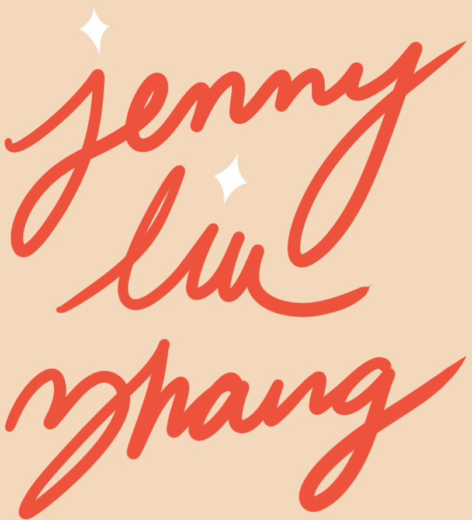

welcome to the world of

Work Portfolio
·
Personal Blog
·
Twitter
new year moodboard
reads on my mind
The Lesson by Toni Cade Bambara
Letters by Kurt Vonnegut
Magellan Street, 1974 by
Maxine Kumin
Wants by Grace Paley
Some Reflections on Journalism by Roger Cohen
Ghost-Birds by Nicolas Pizzolatto